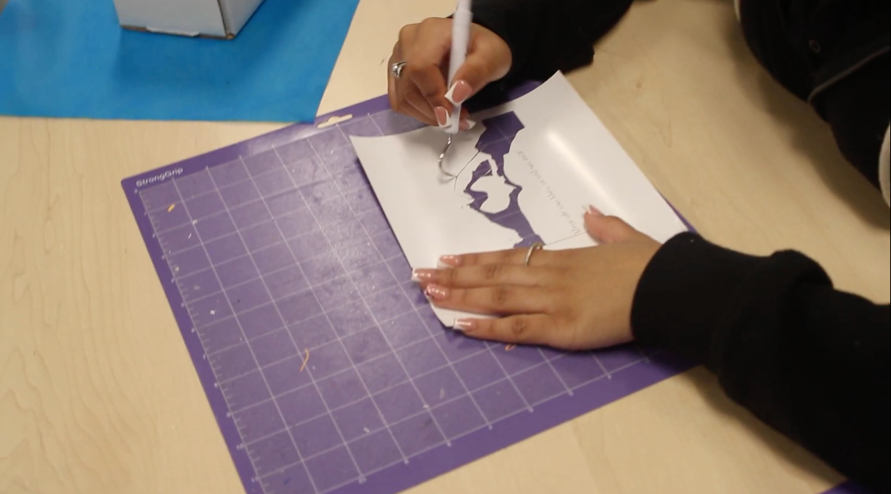

Screen Print Design
Designing and Building the Frame
The first part of the project was coming up with our design ideas and building a strong frame. We started by using Adobe Photoshop to brainstorm and sketch out different things we wanted to screen print. After we picked our favorite idea, we uploaded the sketch to a concept development sheet to work on the details. Next, we used Adobe Illustrator to prepare our content and make a mixing guide and cut list to start building the frames out of wood. We measured, marked, and cut the wood to the exact size we needed. Finally, we glued and stapled the corners together so the frame would be sturdy enough to hold the mesh tight.

Preparing the Screen and Printing
Once the wooden frame was finished, we had to get the screen and the vinyl stencil ready for printing. We stretched the mesh fabric as tight as we could across the wood frame and used staples, a hammer, and tape to hold it down flat. Next, we sent our Photoshop design to a software cutting machine called Silhouette Studio to cut our own design. After this, we carefully started "weeding" my design. This means removing the sticker material from everywhere I want ink to pass through my stencil and leaving on the mat the stencil pattern that will block/prevent ink from reaching the print. To finish up, we used a heat press to iron our vinyl stencil right onto the mesh fabric. We also put tape around the inside edges of the frame to make sure no extra ink would leak through when we started printing. Throughout this project, I mastered the 21st century skill of communication and collaboration because our class switched tables every couple of months, forcing me to constantly adjust to new environments and people's different kinds of workstyles. I learned how to quickly jump into a new group, communicate effectively, and keep my project on track.
